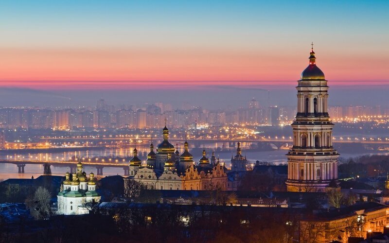
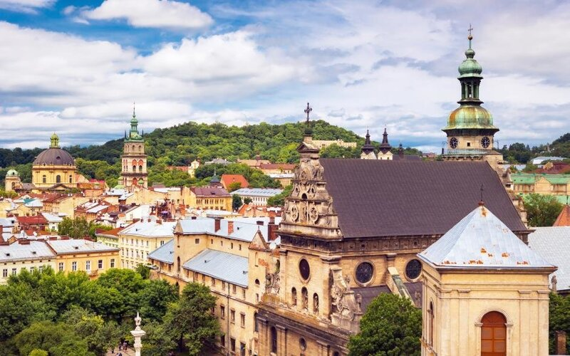
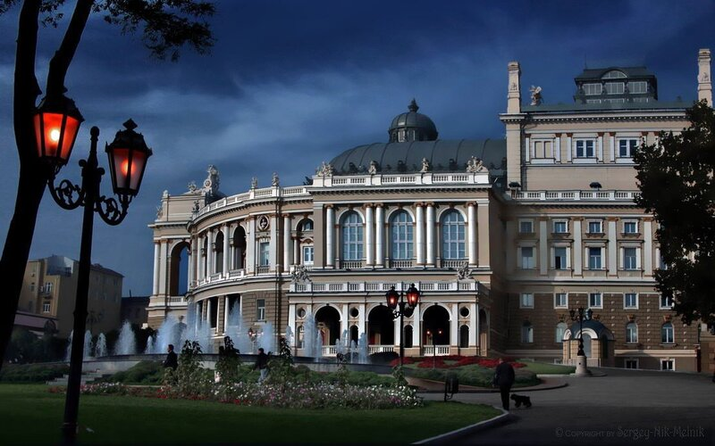
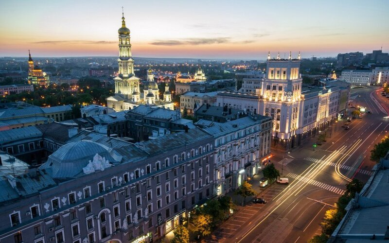
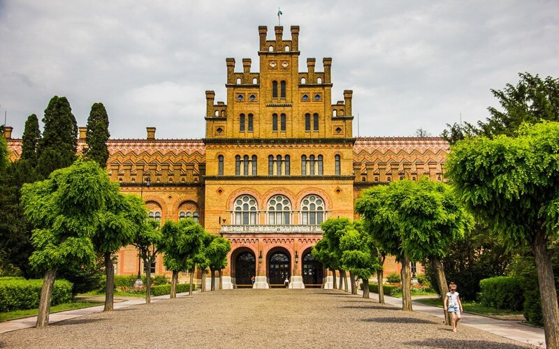
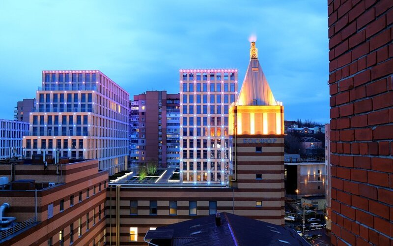
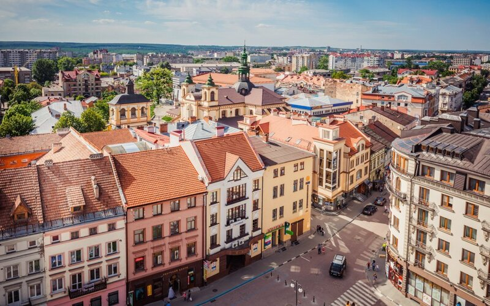
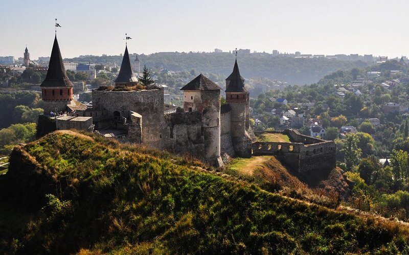
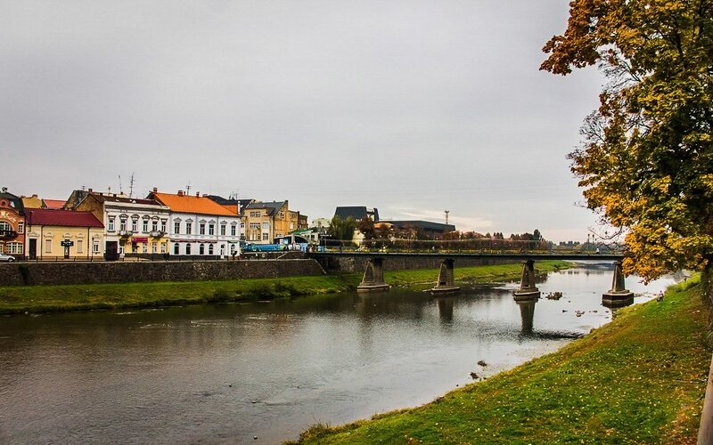
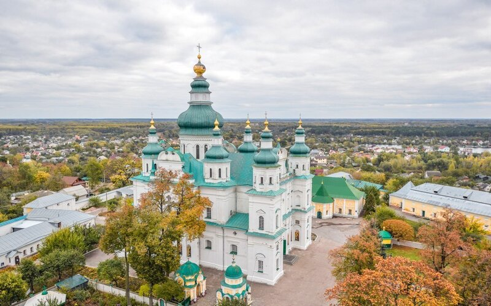

Подорожі – як наркотик, спробувавши одного разу, важко відмовитись. Але ми стверджуємо, що це дуже приємна і корисна залежність! Тим більше, в Україні безліч міст і містечок, які обов’язково варто відвідати. Адже незабутні враження не обов’язково шукати в інших країнах, чи навіть перетинати заради них океани. Можливо, до найкрасивішого міста на світі їхати лише декілька годин? Тож обирайте пункт призначення та скоріш пакуйте валізи!
Особисто я дуже люблю подорожі, хоча й останнім часом не дуже часто вдається подорожувати Україною. Ось моя десятка міст.
Київ
Мабуть, немає українця, який не зможе відповісти на питання «що подивитись у Києві?». Золоті ворота, Батьківщина-мати, Хрещатик – про ці місця, певно, знають навіть діти. Іноді здається, що для справжнього знайомства зі столицею на вистачить i цілого місяця – аж стільки тут цікавинок! Але це не просто місто з тисячолітньою історією, воно має сучасне обличчя. Високий туристичний сезон в столиці припадає на знамените цвітіння каштанів, помилуватись яким приїжджають й іноземці.
Львів
Ой, так люблю той Львів, що бракує ми слів! Кожен уявляє його просякнутим ароматами кави та шоколаду. Сюди їдуть за романтикою, атмосферою старого міста та історичними пам’ятками. Львів – це європейське місто, для відвідин якого вам не знадобиться біометричний паспорт. Неймовірна кількість костелів, храмів та замків роблять його по-справжньому середньовічним та казковим, особливо під час різдвяних свят. Кожен турист обов’язково має відвідати атмосферні кафе міста Лева – «Криївку» та «Мазох».
Одеса
Найколоритніше місто України на березі моря. Приїхати сюди варто не тільки задля відвідування легендарного Оперного театру або численних пляжів. В Одесі обов’язково слід поторгуватися на Привозі, подивитись на Дюка, стоячи на другому люку, і, звичайно, перелічити всі Потьомкінські сходи. А якщо вам вдасться знайти гіда, який розповість вам неймовірні історії про місцеві дворики, ви точно закохаєтеся в цю перлину біля моря.
Харків
Кожен знає, що це – перша столиця, а ще найбільш студентське місто України. Перше, що вас вразить у ньому – напрочуд красивий вокзал. Якщо ви раніше не бували у Харкові, обов’язково прогуляйтесь Сумською вулицею, від реставрованого майдану Конституції і аж до Парку культури і відпочинку ім. Максима Горького, що вважається одним з найкрасивіших в Європі. А ще в місті багато сучасних арт-об’єктів: від муралів на стінах багатоповерхівок і до галерей сучасного мистецтва. До речі, вхід у більшість з них вільний. 23 серпня тут пишно святкується День міста, тож радимо відвідати його в цей час.
Чернівці
Чи то «український Париж», чи то «українська Венеція» – як це місто тільки не називають! Напрочуд красиве місто з вишуканою архітектурою та затишними, майже камерними вулицями. Візитівкою міста є Чернівецький національний університет ім. Юрія Федьковича. Чому? Бо це ідеальний знімальний майданчик для фільмів про Гаррі Поттера! Він вражає самим лише зовнішнім виглядом, а що буде, як зануритись в таємниці його історії? А от в Чернівецькій області можна знайти шматочок Нідерландів: у селі Лужани навесні розквітають тисячі прекрасних тюльпанів.
Дніпро
Багато хто вважає це місто суто індустріальним і геть не туристичним. А дарма, адже тут є на що подивитись! Взяти хоча б неймовірних масштабів набережну чи мальовничий Парк ім. Лазаря Глоби. Родзинкою міста є Монастирський острів. За переказами, його відвідували княгиня Ольга, князь Володимир, хан Батий та ще багато історичних постатей. Дістатись до нього можна пішохідним мостом, на який неодмінно слід повісити замочок, а ключ кинути у води Дніпра, – кажуть, то на щастя.
Івано-Франківськ
Дехто називає це місто лише проміжною зупинкою між Східною Україною та Закарпаттям, однак він є самостійним туристичним та культурним центром. Як і годиться кожному місту, що отримувало магдебурзьке право, тут побудували ратушу – зараз вона є символом міста. Радимо також прогулятись знаменитою «стометрівкою», тут ви знайдете багато цікавих пам’яток, вуличних кафе і книжкових магазинів. А якщо матимете романтичний настрій, завітайте на Міське озеро та розташований у ньому Острів любові, що має форму серця.
Кам'янець-Подільський
Це одне з найатмосферніших міст України. Через велику кількість пам’яток історії його називають суцільним музеєм під відкритим небом. Місцева фортеця послугувала декораціями для безлічі історичних фільмів. До речі, до неї веде найстаріший в Україні міст – Турецький. Влітку місто живе численними фестивалями, зокрема радимо відвідати музичний RespublicaFEST та фестиваль повітряних куль.
Ужгород
Це найменший обласний центр України, однак за цією компактністю приховується тисячолітня історія. Поміж іншого, туристів приваблює унікальне для наших країв явище – цвітіння сакури. У період з кінця квітня до середини травня район Малий Галагов перетворюється на квітучий сад. Не меншої уваги варта найдовша в Європі Липова алея, що простягається вздовж двох набережних – Студентської та Незалежності. І звичайно ж, якщо ви завітали до цього міста, обов’язково відвідайте Ужгородський замок.
Я особисто ніколи не був в Ужгороді, але дуже хотів в би побачити це місто
Чернігів
Північна столиця українського козацтва не має шансів бути нецікавою для туристів. Місцеві радять в першу чергу вирушати на Чернігівський Вал – це таке собі «городище» в місті. Тут компактно розміщені всі головні архітектурні та історичні пам’ятки: церкви, оборонні споруди, величезні чавунні гармати.
Місто, яке я б хотів ще раз відвідати